🍽️ Lwiw Gastro Tour: Ein Fest für die Sinne
Entdecken Sie die kulinarische Seele von Lwiw. Von geheimen Bunkern bis zu kaiserlichem Luxus – hier ist jedes Essen ein Abenteuer.
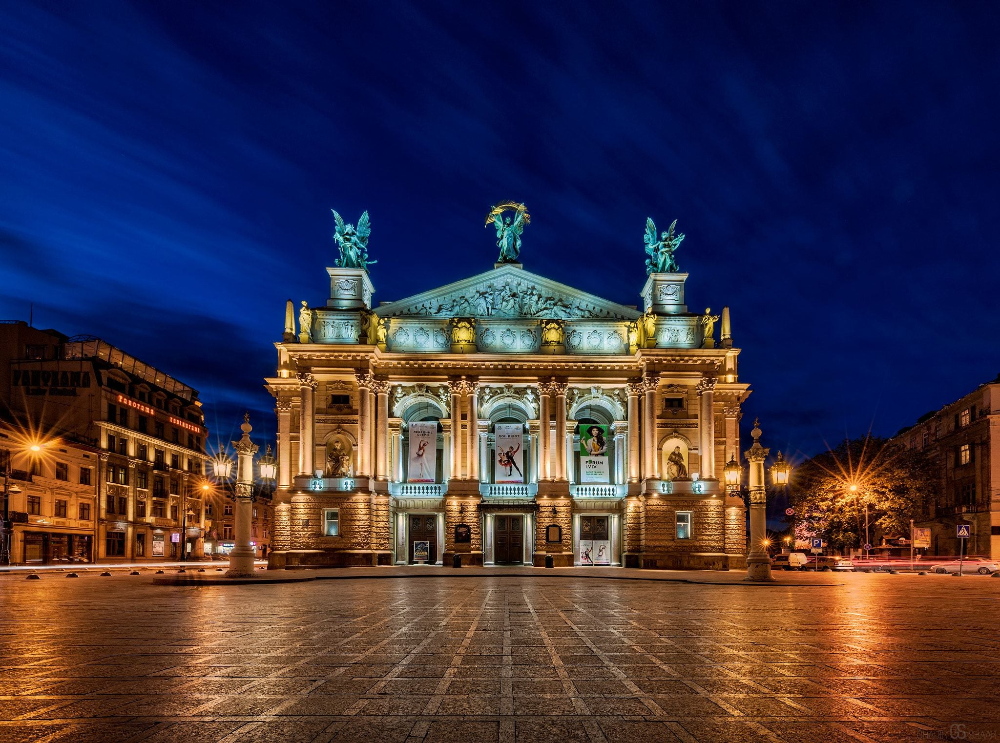🎭 Orte, an denen das Essen zum Theater wird
Kryjivka (Der letzte Unterschlupf)
Das wohl berühmteste Restaurant der Ukraine. Es gibt kein Schild, nur eine unscheinbare Holztür. Um eingelassen zu werden, müssen Sie das Passwort sagen: "Slawa Ukrajini!" (Ruhm der Ukraine!). Im Inneren erwartet Sie ein Partisanen-Bunker mit militärischem Geschirr und deftiger Küche.
Das Konzept: Kryjivka ist mehr als ein Restaurant, es ist eine lebendige Installation. Das Thema ist ein geheimer Bunker der UPA (Ukrainische Aufstandsarmee) aus dem Zweiten Weltkrieg. Hier wird der patriotische Widerstand gegen die Besatzer zelebriert – mit viel Humor, Geschichte und deftigem Essen.
Must-try: Borschtsch im Brot und "Soldaten-Wurst"
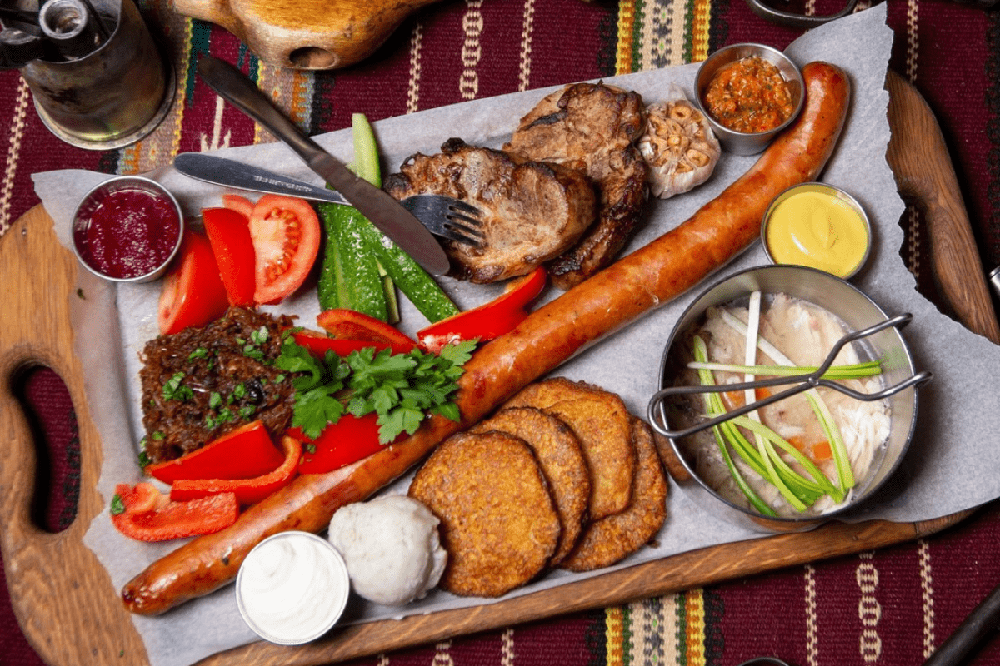 SpeisekarteDas teuerste Restaurant Galiziens (Die Freimaurer)
Ein Restaurant voller Geheimnisse. Von außen sieht es aus wie eine normale Wohnung, und an der Tür werden Sie vielleicht von einem Herrn im Hausmantel begrüßt. Drinnen erwartet Sie jedoch der Luxus einer mystischen Freimaurer-Loge.
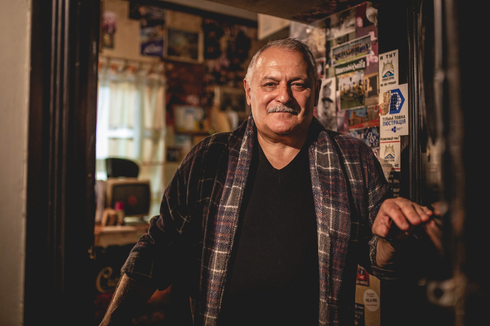Der Show-Effekt: Die Preise auf der Karte sind astronomisch hoch (z.B. 100 Euro für eine Suppe), aber keine Panik! Das ist Teil des Spiels. Jeder Gast erhält mit der richtigen Kundenkarte (oder freundlicher Nachfrage) 90% Rabatt, sodass die Preise wieder ganz normal sind.
 Speisekarte
Speisekarte
Gasowa Lampa (Die Gaslampe)
Ein Museum-Restaurant zu Ehren der Erfinder der Kerosinlampe, die hier in Lwiw das Licht der Welt erblickte. Über 200 Lampen beleuchten das mehrstöckige Gebäude. Die Getränke werden hier stilecht in chemischen Reagenzgläsern serviert.
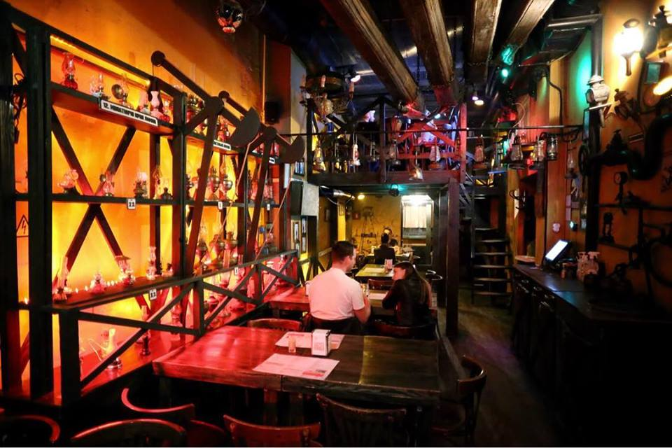Must-try:Das "Chemigasova sche Set" (verschiedene Liköre in Röhrchen).
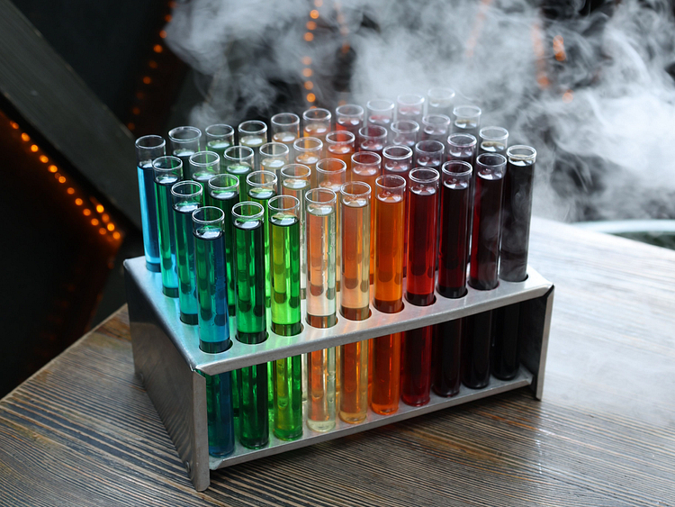 Speisekarte🔥 Fleisch & Feuer
Für Liebhaber von Grillkunst und deftigem Genuss.
Rebernia "Unter dem Arsenal"
Brutale Mittelalter-Romantik in einem historischen Waffenarsenal. Hier gibt es kein Besteck – die saftigen, in Honig marinierten Rippchen isst man mit den Händen! Sie bekommen ein Papier-Lätzchen und ein Beil, um das Fleisch zu teilen. Laut, fröhlich und unglaublich lecker.

Must-try: Gegrillte Rippchen mit Honigkruste.
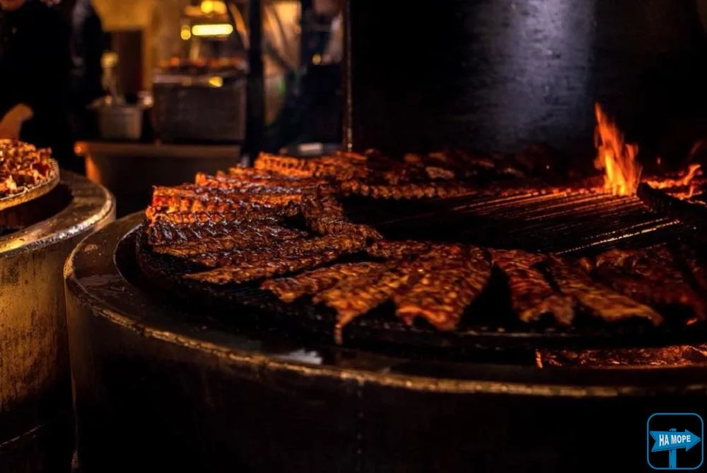 Speisekarte🥂 Eleganz & Atmosphäre
Die aristokratische und moderne Seite der Stadt.
Baczewski Restaurant
Eine Zeitreise in die goldenen 1920er Jahre. Genießen Sie die "Neue Galizische Küche" in einer lichtdurchfluteten Orangerie zwischen Farnen und singenden Kanarienvögeln. Das Frühstück hier ist legendär (Reservierung erforderlich!).
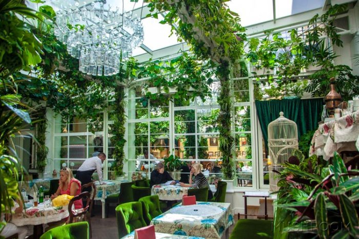Must-try: Der Frühstücksturm und hausgemachte Wodka-Liköre.
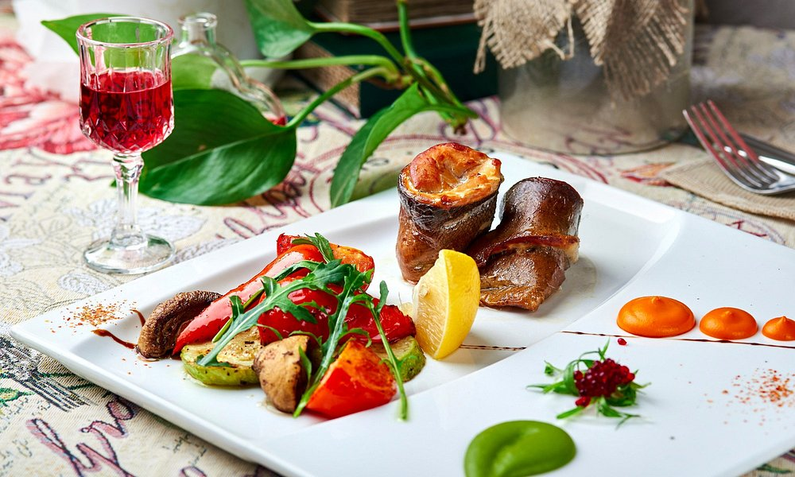 SpeisekarteLOFT7
Wenn Sie Lwiw aus der Vogelperspektive sehen wollen, sind Sie hier richtig. Dieses Restaurant auf dem Dach bietet ein atemberaubendes 360-Grad-Panorama über die Altstadt. Im Gegensatz zu den historischen Cafés herrscht hier moderner Chic, Jazz-Musik und eine luftige Ästhetik. Perfekt für ein romantisches Abendessen bei Sonnenuntergang.
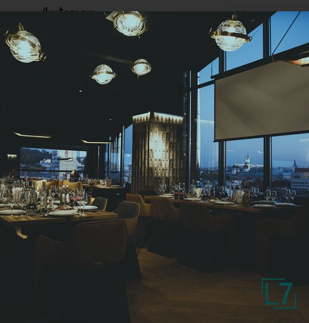Must-try:Designer-Cocktail auf der Terrasse oder das Frühstück mit Aussicht.
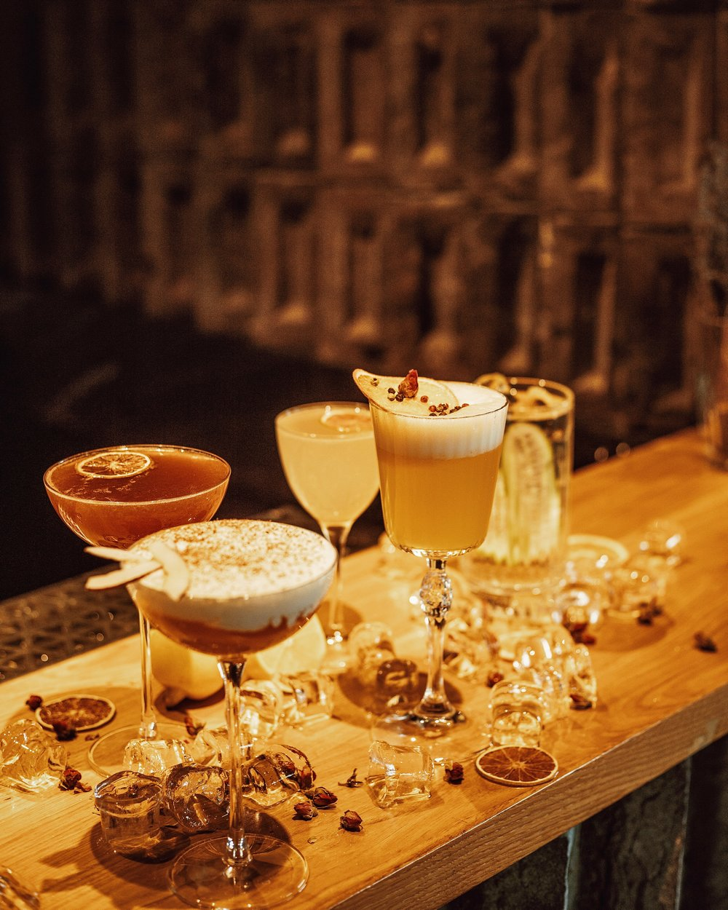 Speisekarte☕ Kaffee & Süßes
Lwiw ist die Kaffeehauptstadt der Ukraine.
Lwiwer Kaffeemine (Kopalnia Kawy)
Lwiw ist der einzige Ort der Welt, wo Kaffee "abgebaut" wird. Setzen Sie einen Helm auf und steigen Sie in den Stollen hinab. Dort wird der berühmte "Versiegelte Kaffee" mit einem Flammenwerfer direkt vor Ihren Augen karamellisiert.
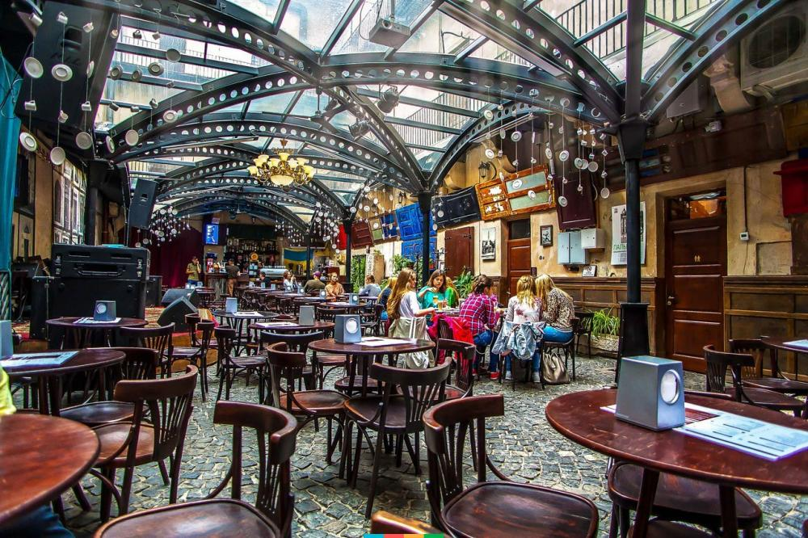Must-try:"Versiegelter Kaffee" (Zapajana Kawa).
 Shop
Shop
Lwiwer Schokoladenmanufaktur
>
Ein mehrstöckiges Haus, in dem Schokolade in Strömen fließt. Beobachten Sie die Meister bei der Herstellung von Pralinen und genießen Sie den Ausblick von der Dachterrasse.
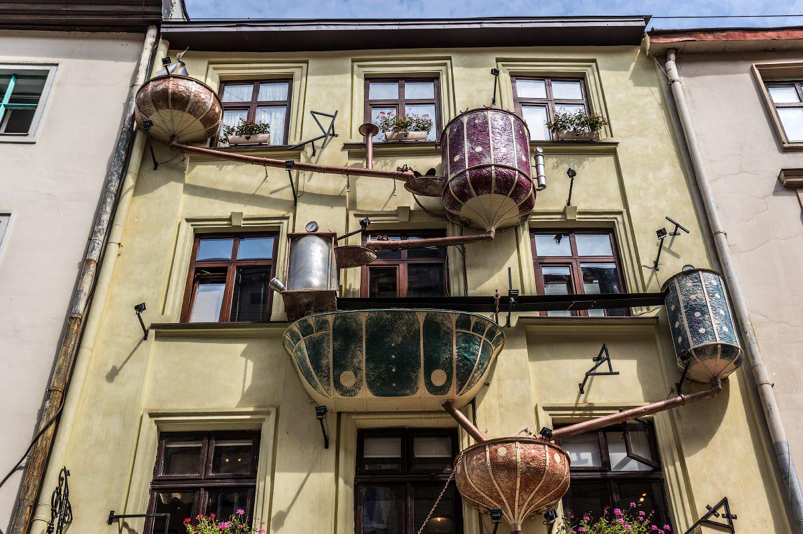Must-try:Heiße Schokolade mit Nüssen.
 Shop
Shop